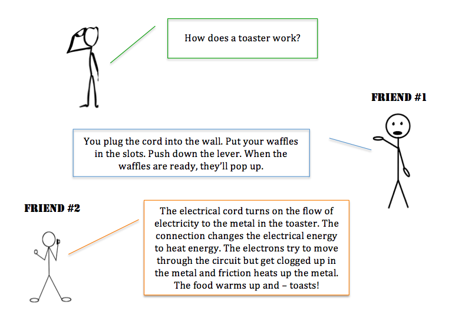
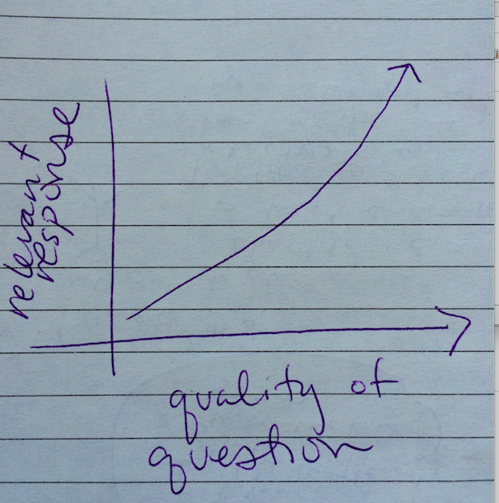

Crafting the Right Questions
23 de junio 2015
Oh, asking good questions. I immediately put on my teacher hat and started thinking about the skill and art of crafting the just-right question to ask students in order to lure them into responding with the understanding that I want them to say. Did you follow that?
The more precise the question, the more precise the response (can be). I'm thinking about how tough my first semester of teaching was because I was asking questions that students didn't know how to interpret so they couldn't respond. A great question is crafted with language that matches the level of understanding of the person hearing it. Crafting a question to ask a student that speaks English as a second language a question is different than the way I might ask a native English speaker. To be clear, I'm not changing my expectation of the response. Just the way I approach asking the question.
The Toaster Question
Which response is most appropriate? Can you tell by the question? Maybe the person asking has never seen a toaster before and doesn't know how to operate a toaster. Maybe the person is a young budding engineer and wants to understand how energy transforms. The big question is: How does the question change to elicit the type of response you want to hear?
- What is the relationship between electricity and how a toaster toasts?
- How do I use a toaster?
I've designed and facilitated professional development for new teachers that focuses on crafting the just-right questions to elicit responses that tell you what your students do or don't understand. Specific, right? Because of my experience as a teacher and teacher coach, I have had relevant and insightful responses to the questions that I have asked throughout Phase 0. If I don't hear the response that is meaningful, I figure out a different way to ask the question.
Another reason I believe I am asking the just-right question is from my experience as a Spanish-speaker and as a native English-speaker with students and friends that speak English as a second language. I am hyper aware of the words I choose to use so that I can communicate clearly and effectively with the people around me.
In stack overflow or other forums online, I notice that the more general/less-specific the question, the more varied the types of responses. That isn't ideal for me as a learner! If the intent of the question is not clear, then the responses are null and not relevant. When the intent is clear and the question is asked effectively, the responses are more precise and more helpful. There can be a wide scope of responses to a well-asked question; it just means there are many ways to get to a similar place. The yellow brick road might not be the only way to Oz. You might approach your journey by...hot air balloon or skydiving.
Just in case, here's the link to the course I designed on how to craft the right questions to ask your students.